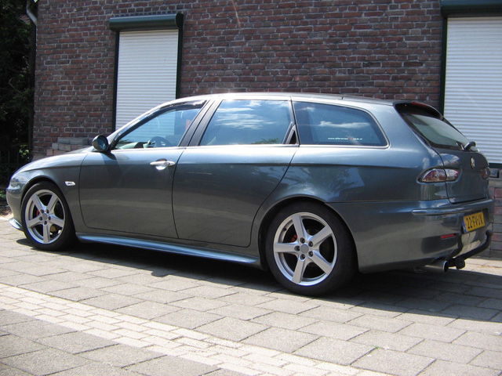
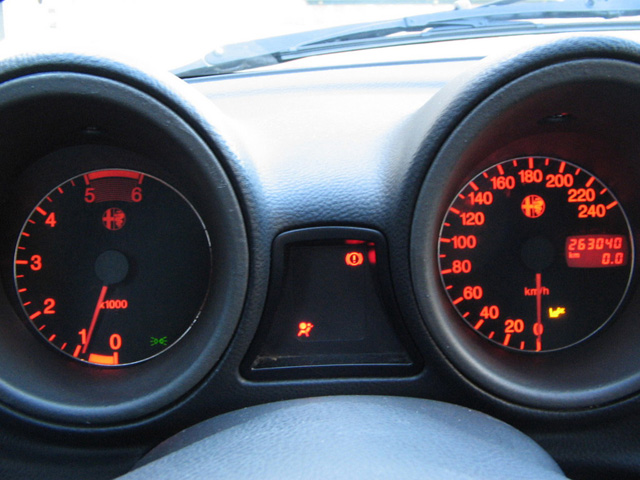
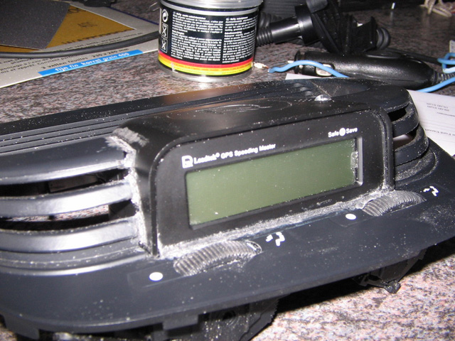
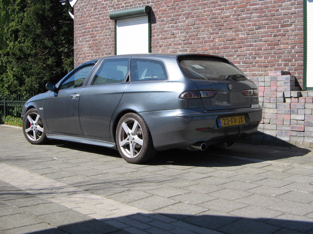
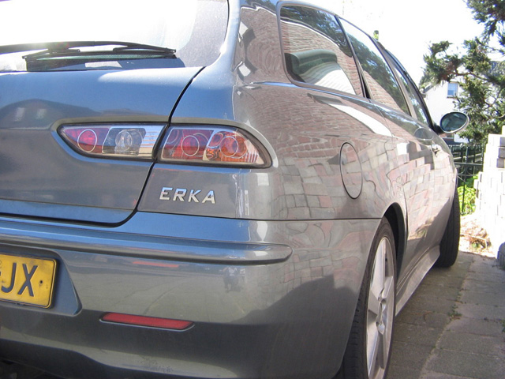

Roger Kelleners - Netherlands
Name: Roger Kelleners
Forum nick: erka www.alfaromeo156club.nl
Age: 40
Gender: Male
Location: Echt ( Midden Limburg in The Netherlands )
Occupation: : Proces operator Sabic
Interests other than cars:
Cars, Bikes, my Girlfriend, Alfa 156 club
Previous car:
Alfa 156 1.9 JTD Berlina, Suzuki SJ 413, Suzuki SJ 413, Mercedes C220 Diesel, Hyundai Coupe 2.0, Chevy Van G30 V8,
SsangYong Musso 2.9 D, Opel Frontera, Jeep Cherokee, Daihatsu Feroza, Suzuki Vitara 2X and and and.....
I own also a Ford Escort Cabrio 1.6i model 1983
Dream car:
Mercedes ML, Alfa 159 SW
Why did you buy an Alfa 156:
Because it was the only one who bought my mercedes, that car dealer where i bought my first 156 ;-)
If you had to change your car today, what would you buy:
Alfa 159 JTD SW
Info about your 156:
Alfa 156 1.9 JTD SW
from 2000 fase 2 model.
What modifications have you done to it:
- Suspension : Yellow Koni whit ebaich springs
- 16V Flywheel
- GTA stabi's
- Zender frontspoiler / skirts
- 17" enzo Wheels
- Grey Lether
- Sportpack Dash ( see pic )
- Squadra tuning ( from 105 Hp tot 145 Hp with bleedvalve )
- Sun Shades
- GPS Speedcontrol Locator ( build in Dash, see pic in progress )
What are your future plans for your 156:
...don't know, like it already
Do you have any good storys from your Alfa Romeo driving:
see www.alfaromeo156club.nl about the story " stichting doe een Wens "
or www.alfaromeo156club.nl meets PK ( car program on TV...Like Top Gear )




Submitted: 2007
![[Prev]](bw_prev.gif)
![[Index]](bw_index.gif)
![[Next]](bw_next.gif)